Průhonická botanická zahrada
Projekt Not Trending vznikl ve spolupráci s Průhonickou botanickou zahradou, která spravuje jednu z největších sbírek historických odrůd pivoněk, růží, denivek a kosatců, na které se v naší práci zaměřujeme. Některé z těchto rostlin mají původ sahající až do 16. století a představují živé kulturní dědictví.
Projekt obrací pozornost k botanické zahradě jako místu, které o rostliny pečuje bez ohledu na to, zda jsou v dané chvíli v centru veřejného zájmu. Zahrada není pouze estetickým nebo odpočinkovým prostorem, ale také místem dlouhodobého uchovávání historických odrůd, které by bez této péče mohly zaniknout.
Projekt vznikal na základě rozhovorů s vedoucím botanické zahrady Pavlem Sekerkou a díky času strávenému přímo v prostředí zahrady. Inspirací nám byla jeho myšlenka, že podobně jako módní trendy procházejí i rostliny obdobími zájmu a opomíjení — to, co dnes není považováno za aktuální, může být v budoucnu znovu objeveno jako cenné.
Náš projekt se zaměřuje na vztah mezi popularitou, estetikou a dlouhodobou hodnotou rostlin. Práce botanické zahrady zde představuje péči, která nepodléhá krátkodobým změnám zájmu, ale zaměřuje se na zachování rostlinného dědictví pro budoucnost.
Název NOT TRENDING SINCE odkazuje k jazyku reklamy a módních kampaní. V projektu pracujeme s kontrastem mezi rychle se měnícími trendy a rostlinami, jejichž význam není založený na momentální popularitě. Slogan využívá ironii — rostliny jsou prezentovány jako estetické objekty, jejich hodnota ale nespočívá pouze v aktuální pozornosti.
Součástí projektu jsou plakáty umístěné ve veřejném prostoru v Praze, Ústí nad Labem, Litoměřicích, Průhonicích a Plzni. Každý plakát obsahuje QR kód odkazující na webovou stránku projektu. Vzniklá vizuální kampaň propojuje jazyk propagace s tématem botanického dědictví a péče o rostliny, které by jinak mohly upadnout v zapomnění.
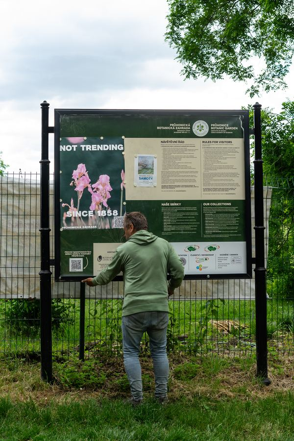
Stará se o sbírku pivoněk a Národní sbírku sněženek.
Stará se o sbírku, která patří mezi čtyři největší kosatcové sbírky ve světě.
Herbář kosatců →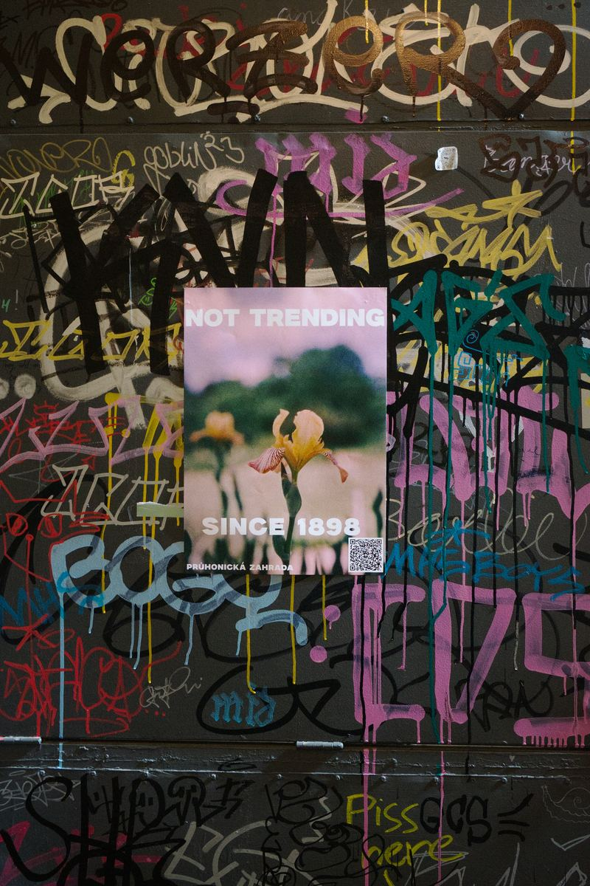
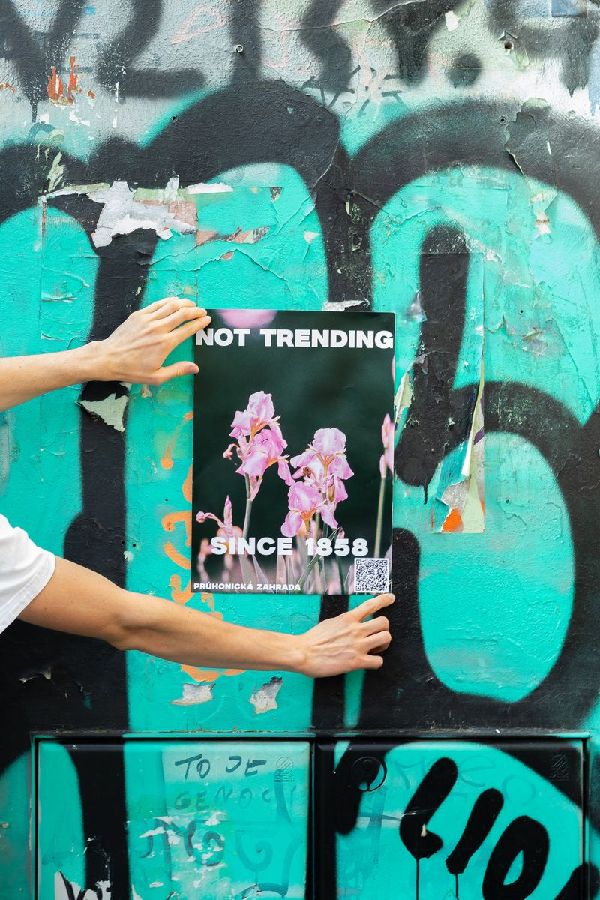
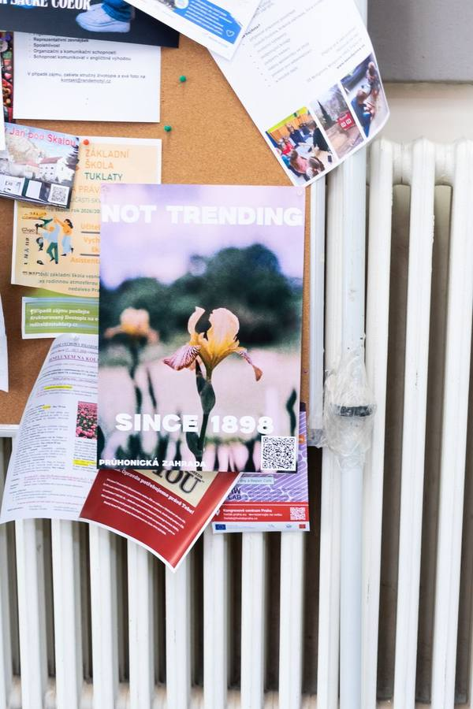
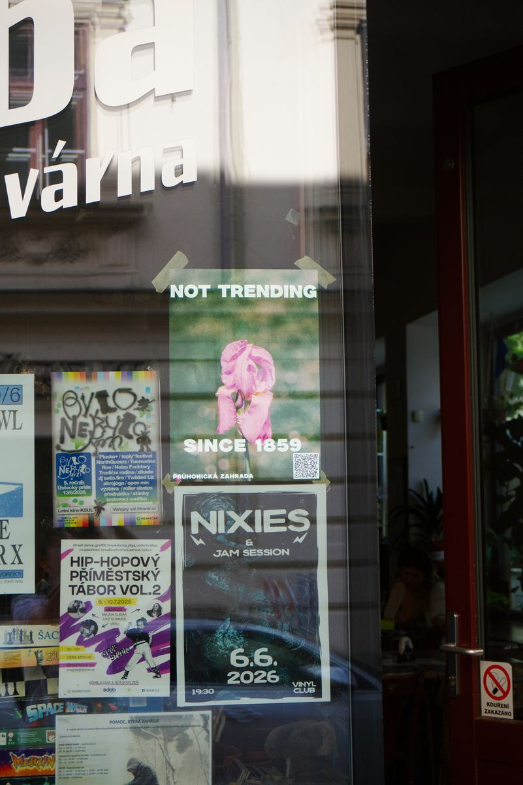
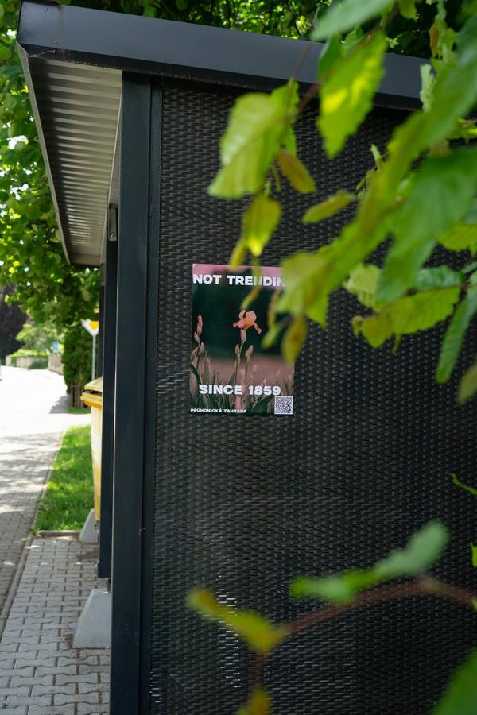
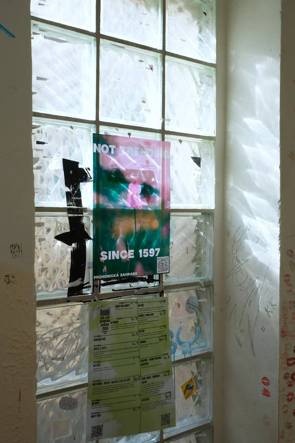
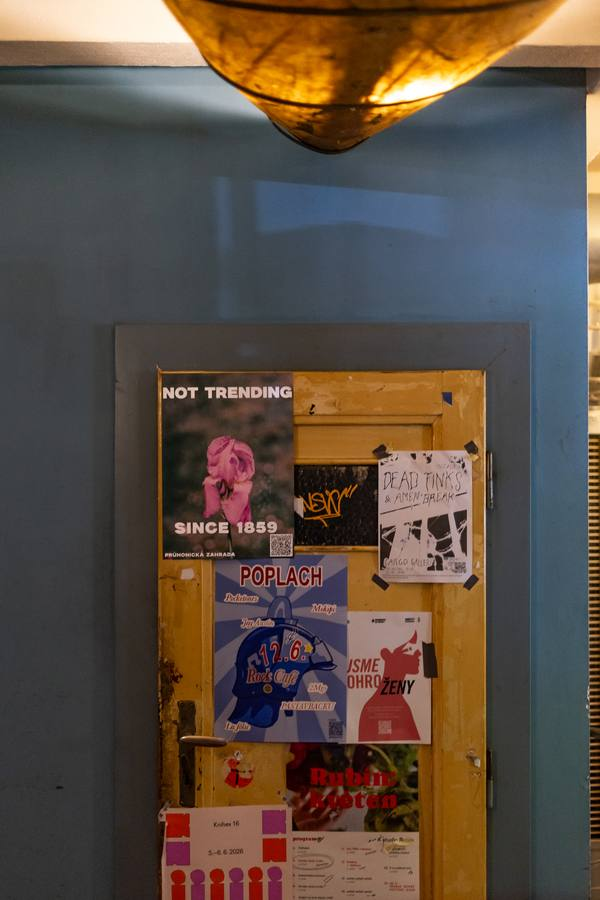
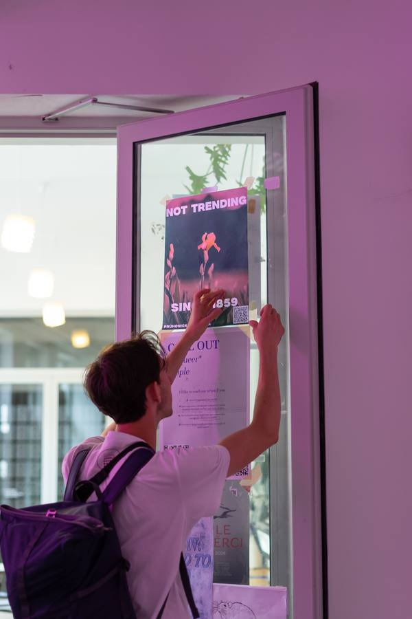
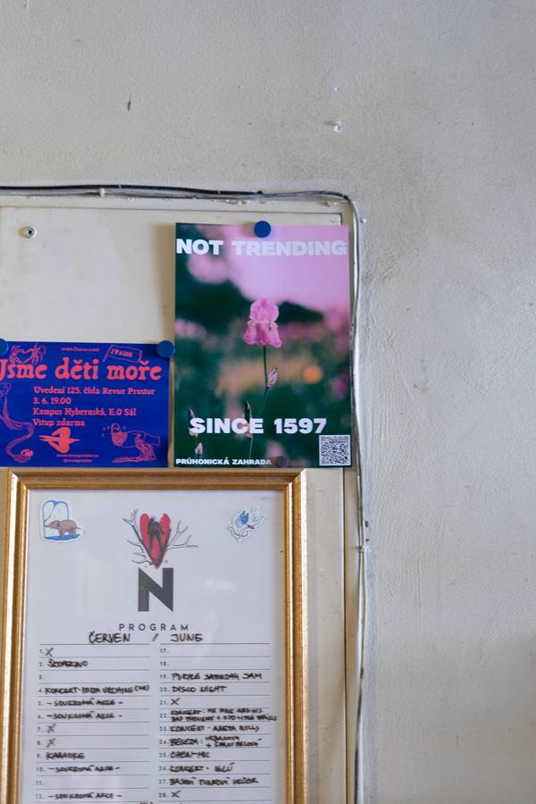
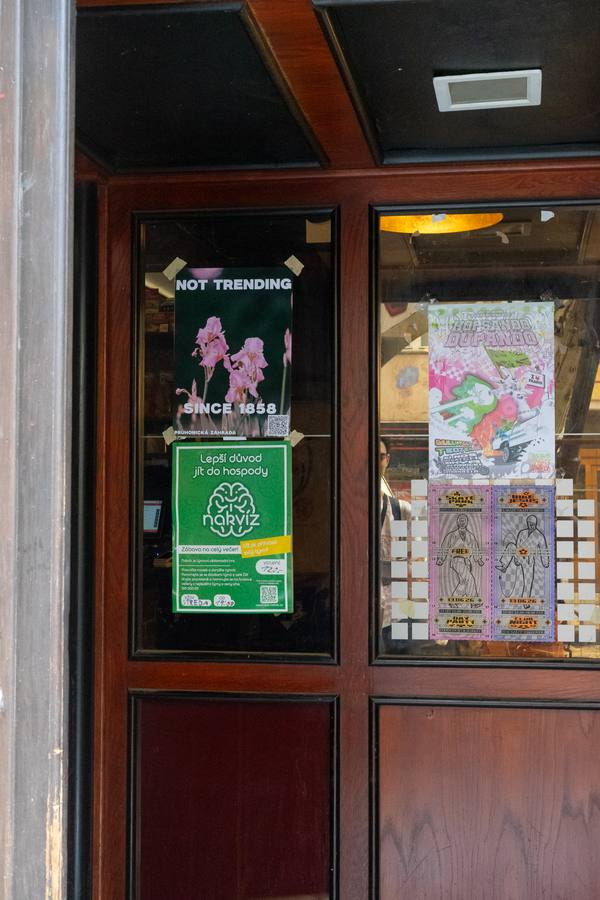
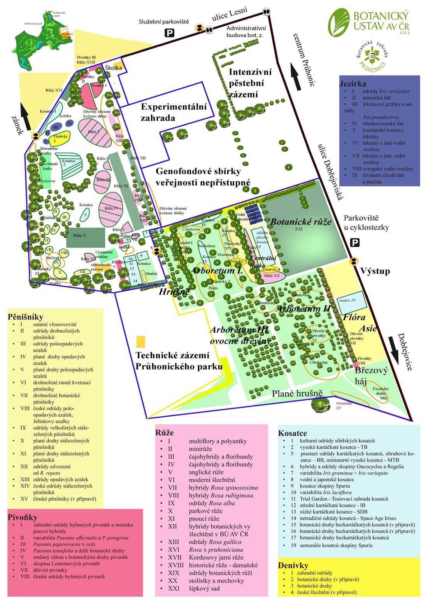
Mapa sbírek Průhonické botanické zahrady. Zdroj: Botanický ústav AV ČR / ibotky.cz. Sbírka kosatců je na mapě označena světle modře (sekce 1–19), pivoňky růžově, růže fialově a denivky žlutě.